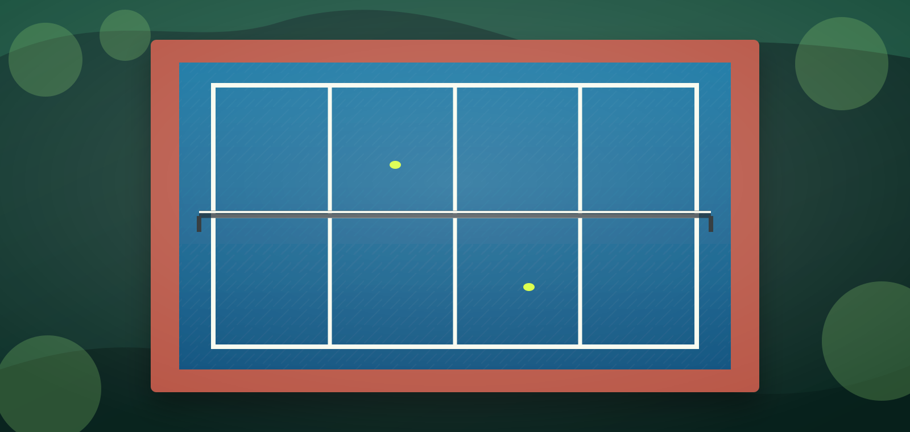

🎾
🎾 Tennis Training Analysis
Персонален анализ на моите тенис тренировки
Garmin FIT • обработка локално

Качи тренировка от Garmin
Избери оригиналния .FIT файл. Файлът не се изпраща към сървър.
Пулс по време на тренировката
Анализ
След като заредиш тренировка, тук ще се появи кратък анализ спрямо наличните данни и запазената история.
История
| Дата | Време | Avg HR | Max HR | Калории |
|---|